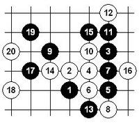
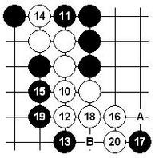
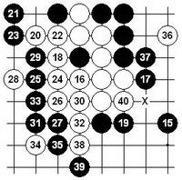
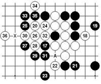
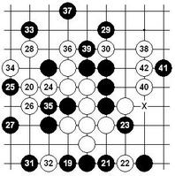
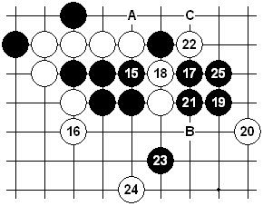
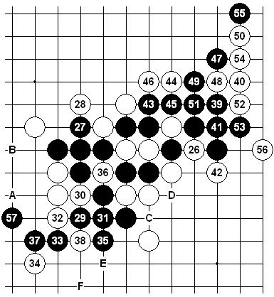
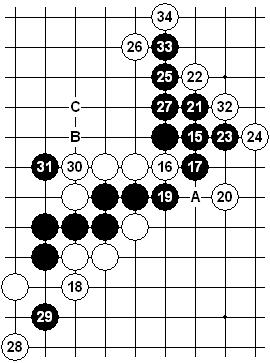
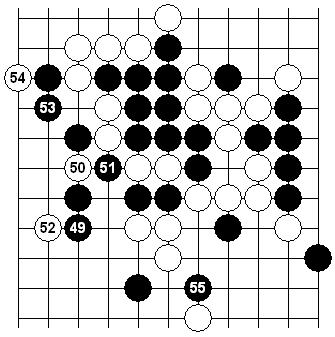

李洪斌点评第七届连珠世团赛
#1 李洪斌点评第七届连珠世团赛 作者：有志青年 发表时间：2008-4-29 9:31:30
中国棋手今天胜瑞典毫无悬念。反观瑞典队看不到整体配合，赛前准备不充分。另外，俄罗斯1队VS俄罗斯2队的比赛中，有两盘棋都是采用一样的变化（见下图）
Savrasova Yulia 执 白 Arevkov Maxim
执 黑 Serdyukov Egor 执 白 Salnikov Pavel
可惜执白的两位棋手都没走出正解。正解参见：
昨日在orc有一局棋战至如下局面，白10是分歧点。如图双方进行到20后，黑棋上方有种种强攻手段，但白棋似乎都有唯一防。白18、20有效的限制了黑棋向下的发展，或许白方认为是可战的局面。但白10为什么不选择13位活三强行牵制呢？局后我对此略作拆解。

本图是白10向下活三的变化，12、14好次序。一般来说白棋这样的形状黑棋危险。15是防守的第一感，不过稍微计算后白棋还是能简单胜，20是巧手！19如A，20－B黑也无解。白棋如此间单解必胜了吗？

其实，问题才刚刚开始。黑15绝妙的最强防！白16确信正确的进攻方向，17弱防此后双方必然应接，白胜不难。

17逆止强！18只能如此选择，其他的选点白难！19弱，20本型成杀的要点。如21－33，22－A！如21－32，22－24，24－26，25－27，26－31！

本图19最强抵抗，20和上图意图类似。23的防点选择对白胜影响不大。

[文章来源：李洪斌博客]
#2 Re:李洪斌点评第七届连珠世团赛 作者：有志青年 发表时间：2008-4-29 10:08:07
第一轮，Chingin VS Filinov 一局较有趣味，执黑的Chingin竟然错过了并不很难的追胜。Filinov从介绍上来看，是一位久经战阵的老棋手了，看到这步白14时，我还以为棋谱有误。不过，由于黑棋的优势太大，黑15也是有力的一手，让白棋难以左右兼顾疲于应付。
执 黑 Chingin Konstantin 执 白 Filinov Vladimir
参考图：黑15以下的追胜的手段，在基本定式中屡见不鲜。这里要注意的是，19是好次序，如果先21再19则不行。如22-B，23-C后25。 如20-A，23-23！
#3 Re:李洪斌点评第七届连珠世团赛 作者：有志青年 发表时间：2008-4-29 10:09:38
中国棋手第二轮战胜俄罗斯1队，向夺冠之路迈出坚实的一步。比较意外的是曹冬 VS Sushkov一局，Sushkov选择了斜月一个必败的防守，并且未走出最强防，似乎是临场决定的策略。Sushkov对中国棋手太缺乏了解。
执 黑 曹冬 执 白 Sushkov Vladimir
参考图：本图的26最强防！早在2000年前后，我和老于对斜月这个白10做过深入的探讨。现在有谱库的基本上都收录了黑棋的胜法。27以下的胜法很经典，经常在教学中被提及。57后黑有A、B和C~F的两胜。
#4 Re:Re:李洪斌点评第七届连珠世团赛 作者：有志青年 发表时间：2008-4-29 21:52:43
第三轮，中国VS日本虽然胜在情理之中，但日本队的战术却让人费解。四局棋有三盘松月，而且都是赌博式的白必败下法。尤其是吴镝VS石谷信一那盘，石谷八段几乎是在送分。陈伟VS高岛一局，陈伟的黑13虽然不是最简明的必胜下法，但这种局面在限时赛中白方压力很大容易出现失误。
5A：20 交换：是 松月局 对局结果 黑胜 棋局时间 2008-4-29 执黑 陈伟 执白 高岛纯也
实战谱 实战谱19是否有误？白简单追胜会视而不见？错过两次机会？19-7i是不错的一手，黑棋依然可以保持全局优势。黑35时，36手防两端都还能顽抗，唯独防中间速败。曹冬VS饭尾义弘，执白的曹冬选择这个白10，日本棋手尤其是老棋手应该是熟悉的。记得第三届经纬杯赛间隙，我和刘彤碰巧在摆这个白10的变化，七十多岁的矶部泰山九段过来随手就摆了个正解，并告知他几十年前就在比赛中下过。另外，此白10在世锦赛中曾多次出现，也被收入俄谱《单击石》。如果要考试的话14-7g是一路较有趣的变化。
5A：8 交换：是 松月局 结果黑胜 棋局时间 2008-4-29 执黑 饭尾义弘 执白 曹冬
#5 Re:李洪斌点评第七届连珠世团赛 作者：有志青年 发表时间：2008-4-30 8:59:03
很可惜，昨天陈伟负于安茨。早上起来看对局谱发现陈伟这轮选择的变化（前17手），与第二轮VS尤利娅的一样。像这样的比赛，一般来说应该尽量避免重复使用变化。疏星的这个7实战白棋好下，除非对黑棋有充分的准备，否则很难有所作为。
比较下面的两盘不难发现，安茨下的比尤利娅好。实战谱一，只是41的失误，实战谱二，黑27已必败，尤其是第32手绝妙！
后面几轮的对手相对较弱，但不利的因素是最后一轮中国队轮空。
执黑 陈伟 vs 执白 Savrasova Yulia 白胜 5A：10 交换：否
执黑 陈伟 VS 执白 Soosõrv Ants 白胜 5A：10 交换：否
#6 Re:李洪斌点评第七届连珠世团赛 作者：有志青年 发表时间：2008-4-30 17:30:00
刚看到两局直播的棋，分别是曹冬 VS Samuli Saarenpää 与吴镝 VS Jussi Ikonen。由于棋局还在进行中，略谈些感想。
由于在小负爱沙尼亚后，中国队必须要尽量争胜。曹冬选择这一长手数必胜感觉风险比较大，因此变化历史较悠久虽然手数长，但只要记住几个关键点其他的难度还是不大的。实战进程一的黑15手是取胜的第一步关键手。
Black: Saarenpää Samuli White: Cao Dong
实战进程一
参考图：白20-A是此型另外一个强防，相对本图的变化黑棋容易找到胜法。本图的35有B、C两种胜法，B点手数较长，但只要发现的话，后面的追胜对段位棋手来说还是容易的。

吴镝的对手Jussi Ikonen，几年前来过上海。我和他还下过一局，当时他开的就是流星局。不过，流星白棋实战稍好，白4是避开大型定式的一手。现在如果黑棋选择7G，将变成和疏星定式互通，黑7其他常见的也有6i和7j的下法。
执黑 Ikonen Jussi 执白 吴镝 5A：7 交换：是
【有志注：此局吴镝8子获胜】
#7 李洪斌点评第七届连珠世团赛第八轮 作者：有志青年 发表时间：2008-5-2 8:46:35
今天是最后的决战，希望中国队登顶成功！棋局还在进行中，目前的形势总体占优。关键看吴镝和吴昊这两盘。吴昊这盘上方的定型有利有弊，目前43手是生动的一步要点，白棋接下来应该防6g ，同时白棋有先手，这里黑棋如何处理是后半程的关键。
44强悍的一手，比下6g要积极。 刚才光顾着看吴镝的棋，转过来看吴昊这盘已经沧海桑田。或许是看到吴镝不利的局势？这盘已经很难和棋了……这盘最终可能是对手时间紧张情况下，没看到白胜。原想曹冬那盘已经是进入白棋步调，比较担心的就是曹冬的时间。可惜，在错过胜机的情况下超时了。
执黑 吴昊 执白 Epifanov Dmitry 对局结果 和棋 5A：10 交换：是
吴镝这盘的对手是我这次世团赛比较关注的一位。本局的白22、24我实战也常这样下，黑左上局部无胜。黑37的转身是时机，38轻妙！下一手关键……
看来吴镝对38手是有准备的，47交换后此处白棋要落后手防，黑可以在右边9K之类的地方开辟新的战场。但如不能决胜，38有些如鲠在喉。
仔细看看发现白棋有8f强手，不知道对手能否发现。这样黑难下了。
黑49发现唯一防……
49是必败的防守，白6g硬活三就可以胜了。不过比赛什么情况都能出现，再等一手看看……
看到52基本上是无念了。
本次比赛，中国队在这个变化上丢了3分。可能是赛前准备有误吧。
执黑 吴镝 执白 Filinov Vladimir
参考图：黑棋的最强防。
